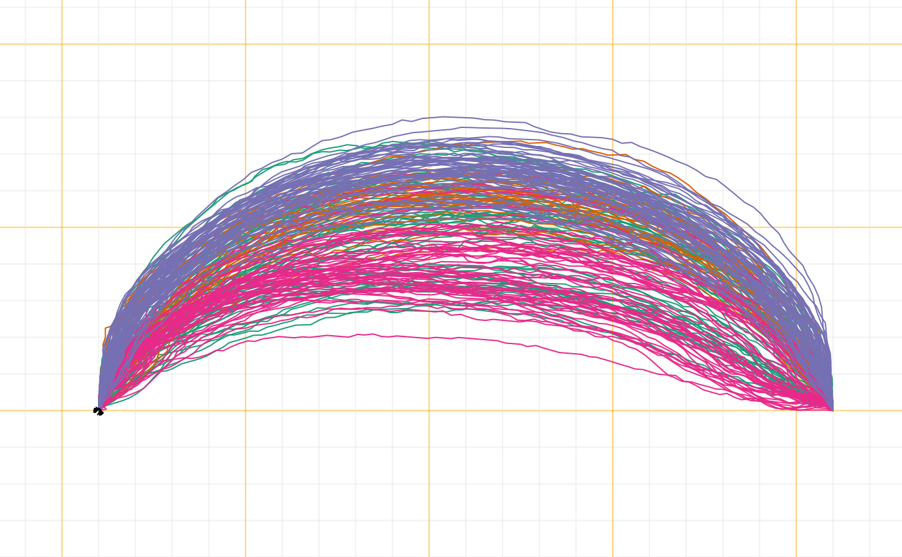

Pile all shapes in the same graphical window. Useful to check
their normalization in terms of size, position, rotation, first point, etc.
It is, essentially, a shortcut around paper + drawers of the grindr family.
Usage
pile(coo, f, sample, subset, pal, paper_fun, draw_fun, transp, ...)
# Default S3 method
pile(
coo,
f,
sample,
subset,
pal = pal_qual,
paper_fun = paper,
draw_fun = draw_curves,
transp = 0,
...
)
# S3 method for class 'list'
pile(
coo,
f,
sample = 64,
subset = 1000,
pal = pal_qual,
paper_fun = paper,
draw_fun = draw_curves,
transp = 0,
...
)
# S3 method for class 'array'
pile(
coo,
f,
sample = 64,
subset = 1000,
pal = pal_qual,
paper_fun = paper,
draw_fun = draw_landmarks,
transp = 0,
...
)
# S3 method for class 'Out'
pile(
coo,
f,
sample = 64,
subset = 1000,
pal = pal_qual,
paper_fun = paper,
draw_fun = draw_outlines,
transp = 0,
...
)
# S3 method for class 'Opn'
pile(
coo,
f,
sample = 64,
subset = 1000,
pal = pal_qual,
paper_fun = paper,
draw_fun = draw_curves,
transp = 0,
...
)
# S3 method for class 'Ldk'
pile(
coo,
f,
sample = 64,
subset = 1000,
pal = pal_qual,
paper_fun = paper,
draw_fun = draw_landmarks,
transp = 0,
...
)Arguments
- coo
a single shape or any Coo object
- f
factor specification
- sample
numericnumber of points to coo_sample if the number of shapes is > 1000 (default: 64). If non-numeric (egFALSE) do not sample.- subset
numericonly draw this number of (randomly chosen) shapes if the number of shapes is > 1000 (default: 1000) If non-numeric (egFALSE) do not sample.- pal
palette among palettes (default: pal_qual)
- paper_fun
a papers function (default:
paper)- draw_fun
one of drawers for
pile.list- transp
numericfor transparency (default:adjusted, min:0, max=0)- ...
more arguments to feed the core drawer, depending on the object
See also
Other grindr:
drawers,
layers,
layers_morphospace,
mosaic_engine(),
papers,
plot_LDA(),
plot_NMDS(),
plot_PCA()
Examples
# all Coo are supported with sensible defaults
pile(bot) # outlines
pile(olea, ~var, pal=pal_qual_Dark2, paper_fun=paper_grid) # curves

pile(wings) # landmarks
# you can continue the pipe with compatible drawers
pile(bot, trans=0.9) %>% draw_centroid
# if you are not happy with this, build your own !
# eg see Momocs::pile.Out (no quotes)
my_pile <- function(x, col_labels="red", transp=0.5){
x %>% paper_chess(n=100) %>%
draw_landmarks(transp=transp) %>%
draw_labels(col=col_labels)
}
# using it
wings %>% my_pile(transp=3/4)
# and as gridr functions propagate, you can even continue:
wings %>% my_pile() %>% draw_centroid(col="blue", cex=5)

# method on lists
bot$coo %>% pile
 # it can be tuned when we have a list of landmarks with:
wings$coo %>% pile(draw_fun=draw_landmarks)
# it can be tuned when we have a list of landmarks with:
wings$coo %>% pile(draw_fun=draw_landmarks)
 # or on arrays (turn for draw_landmarks)
wings$coo %>% l2a %>% #we now have an array
pile
# or on arrays (turn for draw_landmarks)
wings$coo %>% l2a %>% #we now have an array
pile